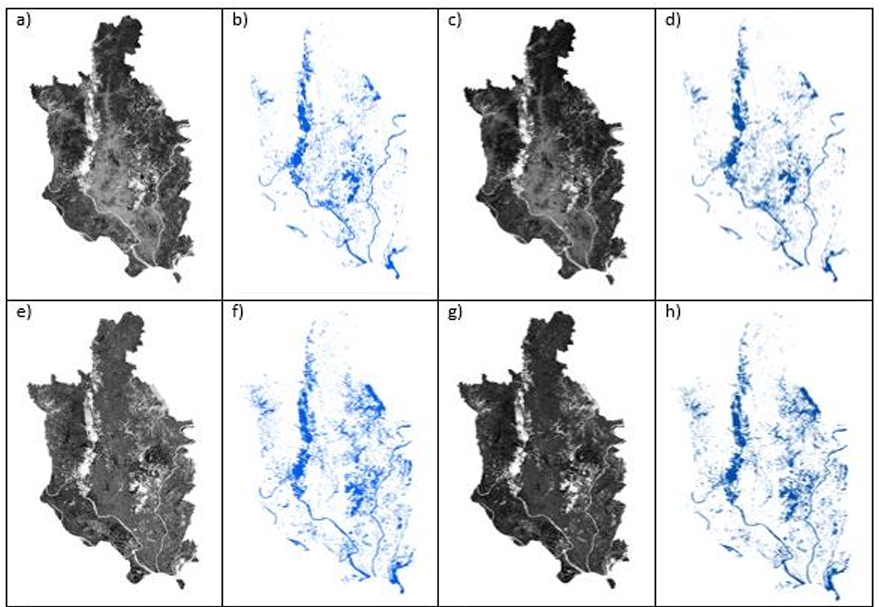

4 Correction
4.1 Summary
There are four types of correction in RS.
Geometric Correction: This involves the correction of the geometric shape of the image to ensure its accuracy.
Atmospheric Correction: This adjusts the image to eliminate the impact of the atmosphere on the observed data.
Orthorectification/Terrain Correction: This corrects the image distortion caused by terrain.
Radiometric Correction: This adjusts the image data to reflect the true surface radiation values.
4.1.1 Dark Object Subtraction
In the practical session this week Dark Object Subtraction (DOS) is introduced. DOS is a relatively simple atmospheric correction method used to remove the effects of the atmosphere from satellite imagery, thereby improving the accuracy of the data. The DOS method is based on the logic that the darkest pixel in the satellite image should have zero reflectance; therefore, any value detected can be attributed to the atmospheric effect. By subtracting this value from the rest of the pixels in the image, the impact of the atmosphere can be minimized.
Selecting the Darkest Pixel: First, the darkest pixel in the satellite image needs to be identified. This pixel is assumed to have the minimum reflectance, typically close to zero, but due to atmospheric scattering and other effects, it actually has a non-zero value.
Calculating Atmospheric Influence: After identifying the darkest pixel, its value (Digital Number, DN) is considered to be caused by atmospheric effects. This value represents the degree of atmospheric influence on the entire image.
Applying the DOS Formula: Next, the value of the darkest pixel is subtracted from the values of all other pixels in the image. This step aims to remove the atmospheric increment from the measurement value of each pixel, thereby approximating the true surface reflectance.
Converting to Reflectance: After subtracting the atmospheric influence, the corrected DN values need to be converted to reflectance. This usually involves using satellite-specific conversion formulas that take into account the position of the sun, the distance between the Earth and the sun, and other relevant parameters.
4.1.2 Image Enhancements
Several techniques for enhancing satellite imagery are covered, including ratioing (e.g., Normalized Difference Vegetation Index - NDVI), filtering, and texture analysis. These methods help emphasize or exaggerate certain features or spectral traits in the imagery.
4.1.3 Data Fusion and Principal Component Analysis (PCA)
The page touches on the concept of data fusion, combining different raster datasets to enrich the analysis. It also introduces PCA as a method to reduce the dimensionality of data, making it easier to analyze and interpret.
4.2 Application
DOS is one of the most effective atmospheric correction methods, as the atmospheric offset can be generated from the image itself. In Sean’s research of DOS effectiveness (Sean, Ashty, Ashraf 2015), their analysis indicates that compared to raw data, DOS-corrected imagery performs better in distinguishing wetland areas.
The study assesses the effectiveness of the DOS method by comparing the image processing results before and after DOS correction. Two sets of images were used: raw images and DOS-corrected images, along with several water indices to analyze and compare their performance in wetland mapping.

(a) The NDWI produced from the raw imagery
(b) Classified NDWI using the optimal threshold
(c) The NDWI produced from the DOS imagery
(d) Classified DOS NDWI using the optimal threshold
(e) The MNDWI produced from the raw imagery
(f) Classified MNDWI using the optimal threshold
(g) The MNDWI produced from the DOS imagery
(h) Classified DOS MNDWI using the optimal threshold
The results show that DOS-corrected images, compared to raw images, exhibit improvements across various accuracy metrics such as overall accuracy, producer’s accuracy, user’s accuracy, and Kappa coefficient. Notably, the MNDWI index demonstrates superior performance on DOS-corrected imagery, achieving an overall accuracy of 98% and a Kappa coefficient exceeding 0.9, indicating that DOS correction significantly enhances the ability to recognize the boundaries between wetland and non-wetland areas. Furthermore, the study found that DOS-corrected images could produce a sharper contrast between wetland and non-wetland areas compared to raw images.
4.3 Reflection
The DOS method operates by identifying and subtracting the reflectance values of “dark objects” within an image, which are assumed to have minimal or no reflectance and are primarily affected by atmospheric scattering. These dark objects typically include deep water bodies, cloud shadows, or any other feature with very low reflectance. By subtracting this atmospheric contribution, the DOS method aims to bring the imagery closer to true surface reflectance values, thereby improving the interpretability and accuracy of the data. Researches have verified that DOS has the following advantages:
Improved Accuracy: DOS-corrected imagery shows a marked improvement in distinguishing wetland areas, with significant enhancements in overall accuracy, producer’s accuracy, user’s accuracy, and Kappa coefficient metrics compared to uncorrected raw images.
Efficiency: DOS is recognized for its simplicity and efficiency, requiring fewer inputs and less complex processing than more robust atmospheric correction methods, such as the Fast Line-of-sight Atmospheric Analysis of Spectral Hypercubes (FLAASH). This makes DOS particularly useful in areas where detailed atmospheric data are unavailable.
Flexibility in Dark Target Selection: Research indicates that non-ideal dark targets, such as cloud-shadow pixels or the minimum reflectance value within an image, can effectively serve as alternatives to the ideal dark target of optically-deep water. This flexibility ensures the method’s applicability across diverse landscapes where ideal dark objects may not be present.
4.4 References
Gilmore, S. and Saleem, A. and Dewan, A. (2015). ‘Effectiveness of DOS (Dark-Object Subtraction) method and water index techniques to map wetlands in a rapidly urbanising megacity with Landsat 8 data’, Proceedings of Research@Locate in conjunction with the annual conference on spatial information in Australia and New Zealand, 1323, pp. 100-108
Wicaksono, P. and Hafizt, M. (2018). ‘Dark target effectiveness for dark‐object subtraction atmospheric correction method on mangrove above‐ground carbon stock mapping’. IET Image Processing, 12(4), pp. 582-587. https://doi.org/10.1049/iet-ipr.2017.0295